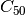
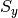
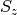
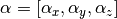
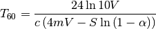
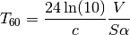

Room¶
The room acoustics module contains several functions to calculate the reverberation time in spaces.
- acoustics.room.c50_from_file(file_name, bands=None)[source]¶
Clarity for 50 miliseconds  from a file.
Parameters: - file_name (str) – File name (only WAV is supported).
- bands (np.ndarray) – Bands of calculation (optional). Only support standard octave and third-octave bands.
- acoustics.room.c80_from_file(file_name, bands=None)[source]¶
Clarity for 80 miliseconds from a file.
Parameters: - file_name (str) – File name (only WAV is supported).
- bands (np.ndarray) – Bands of calculation (optional). Only support standard octave and third-octave bands.
- acoustics.room.clarity(time, signal, fs, bands=None)[source]¶
Clarity determined from an impulse response.
Parameters: - time – Time in miliseconds (e.g.: 50, 80).
- signal (np.ndarray) – Impulse response.
- fs – Sample frequency.
- bands (np.ndarray) – Bands of calculation (optional). Only support standard octave and third-octave bands.
- acoustics.room.mean_alpha(alphas, surfaces)[source]¶
Calculate mean of absorption coefficients.
Parameters: - alphas – Absorption coefficients
 .
. - surfaces – Surfaces
 .
.
- alphas – Absorption coefficients
- acoustics.room.nrc(alphas)[source]¶
Calculate Noise Reduction Coefficient (NRC) from four absorption coefficient values (250, 500, 1000 and 2000 Hz).
Parameters: alphas – Absorption coefficients .
- acoustics.room.t60_arau(Sx, Sy, Sz, alpha, volume, c=343.0)[source]¶
Reverberation time according to Arau. [1]
Parameters: - Sx – Total surface perpendicular to x-axis (yz-plane) .
- Sy – Total surface perpendicular to y-axis (xz-plane) .
- Sz – Total surface perpendicular to z-axis (xy-plane) .
- alpha – Absorption coefficients 
- volume – Volume of the room
 .
. - c – Speed of sound
 .
.
Returns: Reverberation time
[1] For more details, please see http://www.arauacustica.com/files/publicaciones/pdf_esp_7.pdf
- acoustics.room.t60_eyring(surfaces, alpha, volume, c=343.0)[source]¶
Reverberation time according to Eyring.
Parameters: - surfaces – Surfaces .
- alpha – Mean absorption coefficient or by frequency bands
- volume – Volume of the room .
- c – Speed of sound .
Returns: Reverberation time
Eyring’s formula for the reverberation time is:

- surfaces – Surfaces
- acoustics.room.t60_fitzroy(surfaces, alpha, volume, c=343.0)[source]¶
Reverberation time according to Fitzroy.
Parameters: - surfaces – Surfaces .
- alpha – Mean absorption coefficient or by frequency bands
- volume – Volume of the room .
- c – Speed of sound .
Returns: Reverberation time
- surfaces – Surfaces
- acoustics.room.t60_impulse(file_name, bands, rt='t30')[source]¶
Reverberation time from a WAV impulse response.
Parameters: - file_name – name of the WAV file containing the impulse response.
- bands – Octave or third bands as NumPy array.
- rt – Reverberation time estimator. It accepts ‘t30’, ‘t20’, ‘t10’ and ‘edt’.
Returns: Reverberation time
- acoustics.room.t60_millington(surfaces, alpha, volume, c=343.0)[source]¶
Reverberation time according to Millington.
Parameters: - surfaces – Surfaces .
- alpha – Mean absorption coefficient or by frequency bands
- volume – Volume of the room .
- c – Speed of sound .
Returns: Reverberation time
- surfaces – Surfaces
- acoustics.room.t60_sabine(surfaces, alpha, volume, c=343.0)[source]¶
Reverberation time according to Sabine.
Parameters: - surfaces (np.ndarray) – Surface of the room .
NumPy array that contains different surfaces.
- alpha (np.ndarray) – Absorption coefficient of the room .
Contains absorption coefficients of surfaces.
It could be one value or some values in different bands (1D and 2D
array, respectively).
- volume (float) – Volume of the room .
- c (float) – Speed of sound .
Returns: Reverberation time
Sabine’s formula for the reverberation time is:

- surfaces (np.ndarray) – Surface of the room